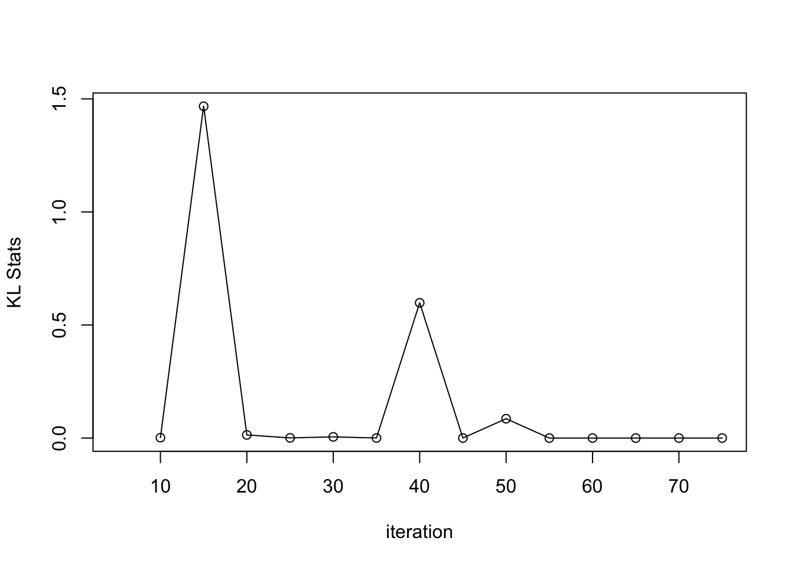
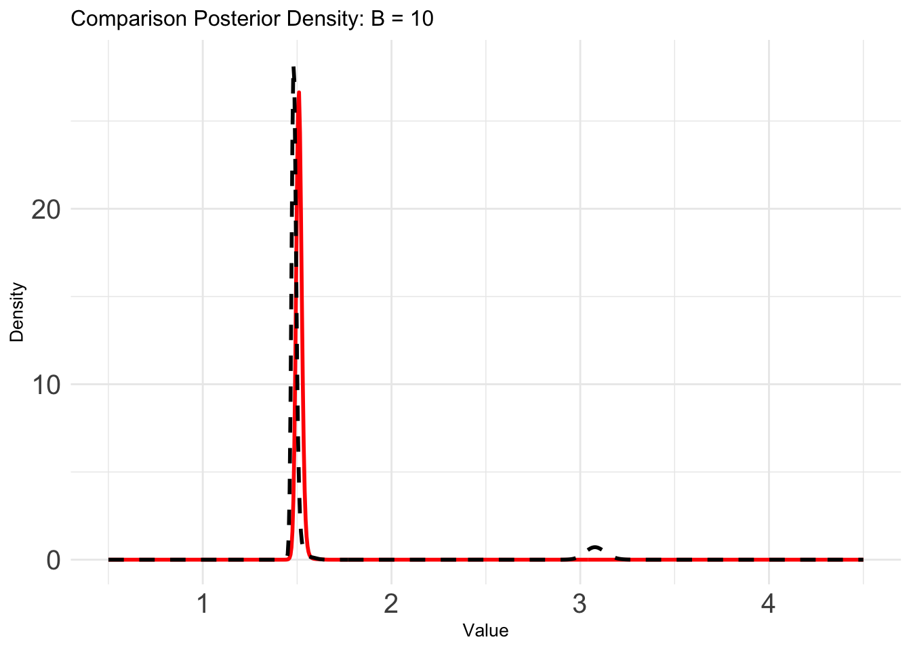

Simulation 1: Inference of the Unknown Periodicity
Ziang Zhang
2025-04-15
Last updated: 2025-04-16
Checks: 7 0
Knit directory: BOSS_website/
This reproducible R Markdown analysis was created with workflowr (version 1.7.1). The Checks tab describes the reproducibility checks that were applied when the results were created. The Past versions tab lists the development history.
Great! Since the R Markdown file has been committed to the Git repository, you know the exact version of the code that produced these results.
Great job! The global environment was empty. Objects defined in the global environment can affect the analysis in your R Markdown file in unknown ways. For reproduciblity it’s best to always run the code in an empty environment.
The command set.seed(20250415) was run prior to running
the code in the R Markdown file. Setting a seed ensures that any results
that rely on randomness, e.g. subsampling or permutations, are
reproducible.
Great job! Recording the operating system, R version, and package versions is critical for reproducibility.
Nice! There were no cached chunks for this analysis, so you can be confident that you successfully produced the results during this run.
Great job! Using relative paths to the files within your workflowr project makes it easier to run your code on other machines.
Great! You are using Git for version control. Tracking code development and connecting the code version to the results is critical for reproducibility.
The results in this page were generated with repository version bdb322d. See the Past versions tab to see a history of the changes made to the R Markdown and HTML files.
Note that you need to be careful to ensure that all relevant files for
the analysis have been committed to Git prior to generating the results
(you can use wflow_publish or
wflow_git_commit). workflowr only checks the R Markdown
file, but you know if there are other scripts or data files that it
depends on. Below is the status of the Git repository when the results
were generated:
Ignored files:
Ignored: .DS_Store
Ignored: .Rhistory
Ignored: .Rproj.user/
Ignored: analysis/.Rhistory
Ignored: code/.DS_Store
Ignored: data/.DS_Store
Ignored: data/sim1/
Ignored: output/.DS_Store
Unstaged changes:
Modified: code/00_BOSS.R
Modified: output/sim1/BO_result_list.rda
Modified: output/sim1/BO_result_original_list.rda
Modified: output/sim1/rel_runtime.rda
Note that any generated files, e.g. HTML, png, CSS, etc., are not included in this status report because it is ok for generated content to have uncommitted changes.
These are the previous versions of the repository in which changes were
made to the R Markdown (analysis/sim1.Rmd) and HTML
(docs/sim1.html) files. If you’ve configured a remote Git
repository (see ?wflow_git_remote), click on the hyperlinks
in the table below to view the files as they were in that past version.
| File | Version | Author | Date | Message |
|---|---|---|---|---|
| Rmd | bdb322d | Ziang Zhang | 2025-04-16 | workflowr::wflow_publish("analysis/sim1.Rmd") |
| html | 4f10511 | Ziang Zhang | 2025-04-16 | Build site. |
| Rmd | 8418236 | Ziang Zhang | 2025-04-16 | workflowr::wflow_publish("analysis/sim1.Rmd") |
| Rmd | fd5cfc6 | Ziang Zhang | 2025-04-15 | update the code |
| html | d6fe802 | Ziang Zhang | 2025-04-15 | Build site. |
| Rmd | 54c40ce | Ziang Zhang | 2025-04-15 | workflowr::wflow_publish("analysis/sim1.Rmd") |
| Rmd | c92efe8 | Ziang Zhang | 2025-04-15 | add result |
| html | facb4d4 | Ziang Zhang | 2025-04-15 | Build site. |
| Rmd | 4d2b19c | Ziang Zhang | 2025-04-15 | workflowr::wflow_publish("analysis/sim1.Rmd") |
Data
library(BayesGP)
library(tidyverse)
library(npreg)
function_path <- "./code"
output_path <- "./output/sim1"
data_path <- "./data/sim1"
source(paste0(function_path, "/00_BOSS.R"))We simulate \(n = 100\) data with true periodicity \(a = 1.5\):
lower = 0.5; upper = 4.5; a = 1.5; noise_var = 1e-6
### Simulate data:
set.seed(123)
n <- 100
x <- runif(n = n, min = 0, max = 10)
true_func <- function(x, true_alpha = 1.5){1 +
0.5 * cos((2*pi*x)/true_alpha) - 1.3 * sin((2*pi*x)/true_alpha) +
1.1 * cos((4*pi*x)/true_alpha) + 0.3 * sin((4*pi*x)/true_alpha)}
log_mu <- true_func(x) + rnorm(n, sd = 2)
y <- rpois(n = n, lambda = exp(log_mu))
data <- data.frame(y = y, x = x, indx = 1:n, log_mu = log_mu)
plot(y ~ x, type = "p", data = arrange(data, x))
| Version | Author | Date |
|---|---|---|
| facb4d4 | Ziang Zhang | 2025-04-15 |
Assume the prior is \(\alpha \sim N(3, 0.5^2)\), we then define the objective function needed for BOSS:
log_prior <- function(alpha){
dnorm(x = alpha, mean = 3, log = T, sd = 0.5)
}
eval_once <- function(alpha){
a_fit <- (2*pi)/alpha
x <- data$x
data$cosx <- cos(a_fit * x)
data$sinx <- sin(a_fit * x)
data$cos2x <- cos(2*a_fit * x)
data$sin2x <- sin(2*a_fit * x)
mod <- model_fit(formula = y ~ cosx + sinx + cos2x + sin2x + f(x = indx, model = "IID",
sd.prior = list(param = 1)),
data = data, method = "aghq", family = "Poisson", aghq_k = 4
)
(mod$mod$normalized_posterior$lognormconst) + log_prior(alpha)
}
surrogate <- function(xvalue, data_to_smooth, choice_cov) {
predict_gp(
data = data_to_smooth,
x_pred = matrix(xvalue, ncol = 1),
choice_cov = choice_cov,
noise_var = noise_var
)$mean
}Exact Grid Implementation
First, as an oracle approach, we set up a dense grid on \(\[0.5,4.5\]\):
x_vals <- seq(lower, upper, by = 0.005)Compute the objective function on the grid:
begin_time <- Sys.time()
total <- length(x_vals)
pb <- txtProgressBar(min = 0, max = total, style = 3)
exact_vals <- c()
for (i in 1:total) {
xi <- x_vals[i]
exact_vals <- c(exact_vals, eval_once(xi))
setTxtProgressBar(pb, i)
}
close(pb)
exact_grid_result <- data.frame(x = x_vals, exact_vals = exact_vals)
exact_grid_result$exact_vals <- exact_grid_result$exact_vals - max(exact_grid_result$exact_vals)
exact_grid_result$fx <- exp(exact_grid_result$exact_vals)
end_time <- Sys.time()
end_time - begin_time
# Calculate the differences between adjacent x values
dx <- diff(exact_grid_result$x)
# Compute the trapezoidal areas and sum them up
integral_approx <- sum(0.5 * (exact_grid_result$fx[-1] + exact_grid_result$fx[-length(exact_grid_result$fx)]) * dx)
exact_grid_result$pos <- exact_grid_result$fx / integral_approx
plot(exact_grid_result$x, exact_grid_result$pos, type = "l", col = "red", xlab = "x (0-10)", ylab = "density", main = "Posterior")
abline(v = a, col = "purple")
grid()
save(exact_grid_result, file = paste0(output_path, "/exact_grid_result.rda"))We can take a quick look at the posterior density obtained from the exact grid. Because of the strong prior centered at \(\alpha = 3\), the posterior density is not exactly unimodal at the true value \(1.5\).
load(paste0(output_path, "/exact_grid_result.rda"))
plot(x = exact_grid_result$x, y = exact_grid_result$pos, col = "black", cex = 0.5, type = "l",
xlab = "x", ylab = "density", main = "Posterior Density", lwd = 2)
abline(v = exact_grid_result$x[which.max(exact_grid_result$exact_vals)], col = "green", lty = "dashed")
abline(v = exact_grid_result$x[which.max(exact_grid_result$exact_vals)], col = "blue", lty = "dashed")
abline(v = a, col = "purple", lty = "dashed")
grid()
| Version | Author | Date |
|---|---|---|
| facb4d4 | Ziang Zhang | 2025-04-15 |
BOSS Implementation
Now, let’s assess the performance of the BOSS algorithm with different choices of \(B\), ranging from \(10\) to \(80\).
eval_num <- c(15, 30, 45, 60, 80)
# Initialize BOSS with 3 equally spaced design points
initial_design <- 5Running the BOSS algorithm at each \(B\):
objective_func <- eval_once
rel_runtime <- c()
BO_result_list <- list()
BO_result_original_list <- list()
for (i in 1:length(eval_num)) {
n_grid <- nrow(exact_grid_result)
eval_number <- eval_num[i]
begin_time <- Sys.time()
result_ad <- BOSS(func = objective_func, update_step = 5, max_iter = (eval_number - initial_design),
opt.lengthscale.grid = 100, opt.grid = nrow(exact_grid_result),
delta = 0.01, noise_var = noise_var,
lower = lower, upper = upper,
# turning off AGHQ check
AGHQ_iter_check = Inf, AGHQ_eps = 0,
initial_design = initial_design)
end_time <- Sys.time()
rel_runtime[i] <- as.numeric((end_time - begin_time), units = "mins")/1.344585
data_to_smooth <- result_ad$result
data_to_smooth$y <- data_to_smooth$y - mean(data_to_smooth$y)
BO_result_original_list[[i]] <- data_to_smooth
ff <- list()
ff$fn <- function(x) as.numeric(surrogate(x, data_to_smooth = data_to_smooth, choice_cov = square_exp_cov_generator_nd(length_scale = result_ad$length_scale, signal_var = result_ad$signal_var)))
x_vals <- (seq(from = lower, to = upper, length.out = n_grid) - lower)/(upper - lower)
fn_vals <- sapply(x_vals, ff$fn)
obj <- function(x) {exp(ff$fn(x))}
lognormal_const <- log(integrate(obj, lower = 0, upper = 1, subdivisions = 1000)$value)
post_x <- data.frame(y = x_vals, pos = exp(fn_vals - lognormal_const))
BO_result_list[[i]] <- data.frame(x = (lower + x_vals*(upper - lower)), pos = post_x$pos /(upper - lower))
}
save(BO_result_list, file = paste0(output_path, "/BO_result_list.rda"))
save(BO_result_original_list, file = paste0(output_path, "/BO_result_original_list.rda"))
save(rel_runtime, file = paste0(output_path, "/rel_runtime.rda"))Let’s compare the first from the BOSS algorithm with the exact grid result:
load(paste0(output_path, "/BO_result_list.rda"))
load(paste0(output_path, "/BO_result_original_list.rda"))
load(paste0(output_path, "/rel_runtime.rda"))
plot(rel_runtime ~ eval_num, type = "o", ylab = "rel-runtime", xlab = "eval number: B", cex.lab = 1.0, cex.axis = 1.0)
plot_list <- list()
for (i in 1:length(eval_num)) {
plot_list[[i]] <- ggplot() +
geom_line(data = BO_result_list[[i]], aes(x = x, y = pos), color = "red", size = 1) +
geom_line(data = exact_grid_result, aes(x = x, y = pos), color = "black", size = 1, linetype = "dashed") +
ggtitle(paste0("Comparison Posterior Density: B = ", eval_num[i])) +
xlab("Value") +
ylab("Density") +
theme_minimal() +
theme(text = element_text(size = 10), axis.text = element_text(size = 15)) + # only change the lab and axis text size
lims(y = range(exact_grid_result$pos))
}B = 15
plot_list[[1]]
B = 30
plot_list[[2]]
B = 80
plot_list[[5]]Comparison of KL and KS statistics
To assess the accuracy of BOSS, we will compute the KL and KS statistics comparing to the posterior from oracle approach:
#### Compute the KL distance:
Compute_KL <- function(x, qx, px){
to_kept <- which(px > 0)
x <- x[to_kept]
qx <- qx[to_kept]
px <- px[to_kept]
# px <- px + .Machine$double.eps
# qx <- qx + .Machine$double.eps
dx <- diff(x)
left <- c(0,dx)
right <- c(dx,0)
0.5 * sum(left * log(px/qx) * px) + 0.5 * sum(right * log(px/qx) * px)
}
KL_vec <- c()
for (i in 1:length(eval_num)) {
KL_vec[i] <- Compute_KL(x = exact_grid_result$x, px = exact_grid_result$pos, qx = BO_result_list[[i]]$pos)
}
plot((KL_vec) ~ eval_num, type = "o", ylab = "KL", xlab = "eval number: B", cex.lab = 1, cex.axis = 1)#### Compute the KS distance:
Compute_KS <- function(x, qx, px){
dx <- c(diff(x),0)
max(abs(cumsum(qx * dx) - cumsum(px * dx)))
}
KS_vec <- c()
for (i in 1:length(eval_num)) {
KS_vec[i] <- Compute_KS(x = exact_grid_result$x, px = exact_grid_result$pos, qx = BO_result_list[[i]]$pos)
}
plot((KS_vec) ~ eval_num, type = "o", ylab = "KS", xlab = "eval number: B", cex.lab = 1, cex.axis = 1)
This is the KL and KS distance between BOSS and the exact grid result for this particular replication. To more robustly assess the performance, let’s
sessionInfo()R version 4.3.1 (2023-06-16)
Platform: aarch64-apple-darwin20 (64-bit)
Running under: macOS Monterey 12.7.4
Matrix products: default
BLAS: /Library/Frameworks/R.framework/Versions/4.3-arm64/Resources/lib/libRblas.0.dylib
LAPACK: /Library/Frameworks/R.framework/Versions/4.3-arm64/Resources/lib/libRlapack.dylib; LAPACK version 3.11.0
locale:
[1] en_US.UTF-8/en_US.UTF-8/en_US.UTF-8/C/en_US.UTF-8/en_US.UTF-8
time zone: America/Chicago
tzcode source: internal
attached base packages:
[1] stats graphics grDevices utils datasets methods base
other attached packages:
[1] npreg_1.1.0 lubridate_1.9.3 forcats_1.0.0 stringr_1.5.1
[5] dplyr_1.1.4 purrr_1.0.2 readr_2.1.5 tidyr_1.3.1
[9] tibble_3.2.1 ggplot2_3.5.1 tidyverse_2.0.0 BayesGP_0.1.3
[13] workflowr_1.7.1
loaded via a namespace (and not attached):
[1] sass_0.4.9 utf8_1.2.4 generics_0.1.3 stringi_1.8.4
[5] lattice_0.22-6 hms_1.1.3 digest_0.6.37 magrittr_2.0.3
[9] timechange_0.3.0 evaluate_1.0.1 grid_4.3.1 fastmap_1.2.0
[13] rprojroot_2.0.4 jsonlite_1.8.9 Matrix_1.6-4 processx_3.8.4
[17] whisker_0.4.1 ps_1.8.0 promises_1.3.0 httr_1.4.7
[21] fansi_1.0.6 scales_1.3.0 jquerylib_0.1.4 cli_3.6.3
[25] rlang_1.1.4 munsell_0.5.1 withr_3.0.2 cachem_1.1.0
[29] yaml_2.3.10 tools_4.3.1 tzdb_0.4.0 colorspace_2.1-1
[33] httpuv_1.6.15 vctrs_0.6.5 R6_2.5.1 lifecycle_1.0.4
[37] git2r_0.33.0 fs_1.6.4 pkgconfig_2.0.3 callr_3.7.6
[41] pillar_1.9.0 bslib_0.8.0 later_1.3.2 gtable_0.3.6
[45] glue_1.8.0 Rcpp_1.0.13-1 highr_0.11 xfun_0.48
[49] tidyselect_1.2.1 rstudioapi_0.16.0 knitr_1.48 farver_2.1.2
[53] htmltools_0.5.8.1 labeling_0.4.3 rmarkdown_2.28 compiler_4.3.1
[57] getPass_0.2-4